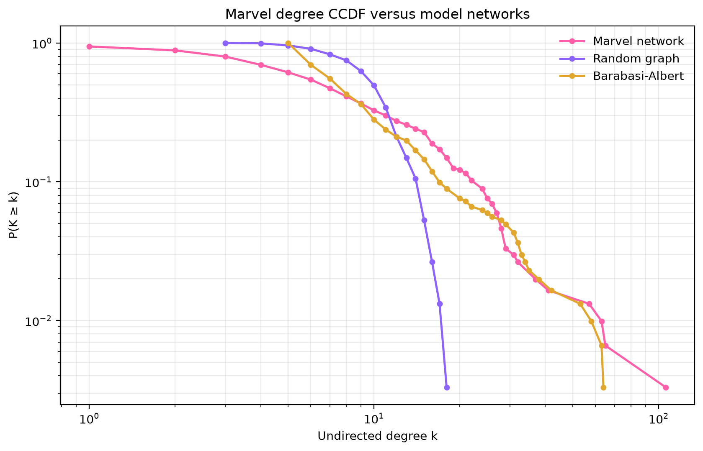
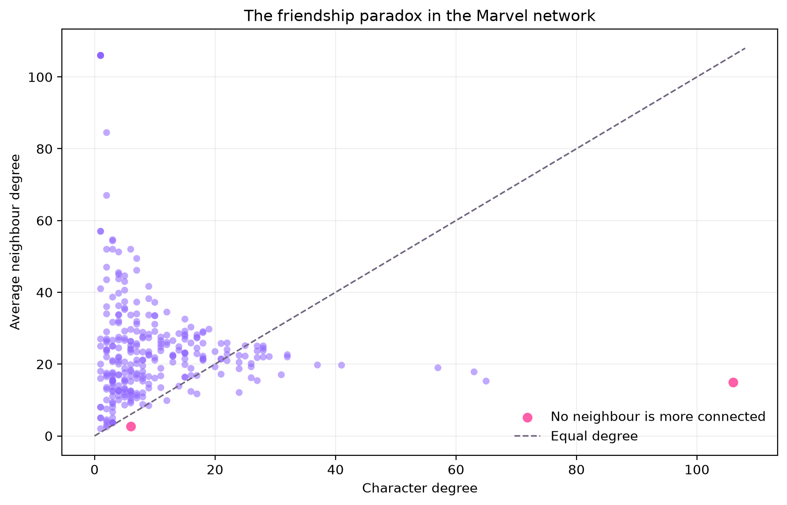
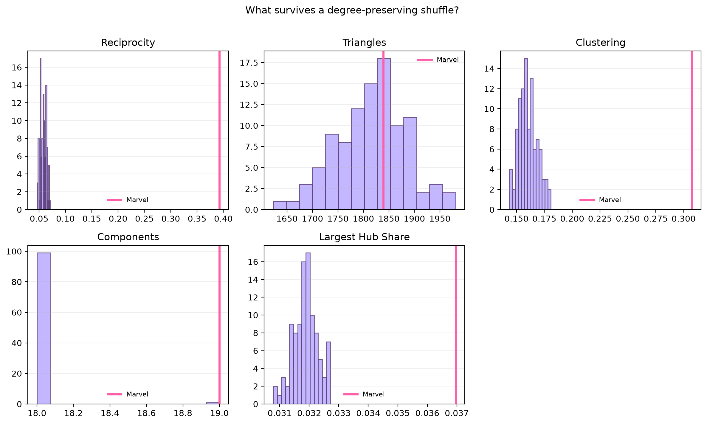
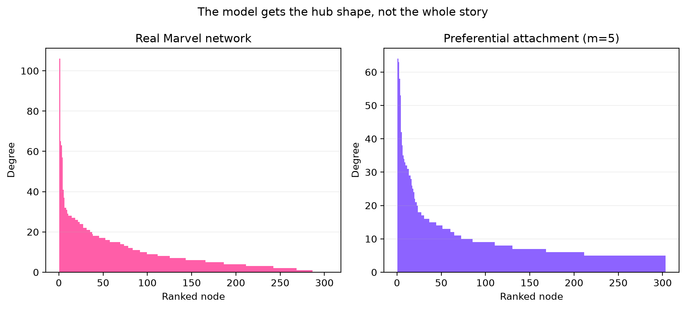

Models & Null Models
Last week we mapped the Marvel hyperlink network. This week we compare that observed structure with networks made by simple rules and with carefully randomised versions of the same graph.
Randomisation gives us a baseline: if a pattern appears in the real network but not in a suitable null model, it becomes much more interesting. The goal is not to crown one model as “the truth”, but to learn which network properties carry meaningful evidence.
01 — Real network vs random / BA
A degree distribution tells us how many links characters have; its complementary cumulative distribution function (CCDF) asks how often a character has at least k links. On the log-log plot below, the Marvel curve has a much longer high-degree tail than the fixed-edge random graph. A Barabási–Albert network, built by preferential attachment, produces a more similar hub-heavy shape.

Figure 1. Degree CCDFs for the real Marvel network, a random graph with the same number of nodes and undirected edges, and a Barabási–Albert network with m = 5.
This is evidence about degree shape, not a complete diagnosis of how the Marvel network was formed. A CCDF comparison cannot establish that Marvel grew by preferential attachment, explain the direction of Wikipedia links, identify causality, or rule out other generative mechanisms. The BA model is useful because it isolates one idea — “popular nodes attract more links” — while leaving many real-world details out.
02 — The friendship paradox
The friendship paradox says that, on average, your friends have more friends than you do. It is a consequence of unequal degree: highly connected characters appear in many more neighbourhoods, so a randomly encountered friend is more likely to be a hub than a randomly encountered character.

Figure 2. Each point compares a character’s degree with the average degree of their neighbours. Points above the diagonal have more connected neighbours on average; pink points are local degree maxima whose neighbours cannot out-popular them.
The effect is driven by the hubs that keep appearing as someone else’s neighbour — Spider-Man appears in 85 of the contributing neighbourhoods, followed by Hulk and Wolverine. In total, 250 of 286 connected characters (87.4%) have neighbours with a higher average degree: 24.2 compared with 10.0 for the character sample. There are also local maxima: Spider-Man and Radian (Morituri) are characters for whom no neighbour has a higher degree. That does not make both globally most popular; it means only that each immediate neighbourhood contains no larger hub.
The network’s connected characters are sampled through edges, and edge sampling over-represents high-degree characters.
“Friend” here means an undirected hyperlink relationship, not a canonical Marvel friendship or a survey response.
03 — Shuffle test
We shuffled the endpoints of directed edges while preserving every character’s in-degree and out-degree. This keeps the degree sequence fixed, so any change in reciprocity, triangles, clustering, connected components, or hub share cannot be blamed on characters simply gaining or losing links.

Figure 3. Null distributions from 100 degree-preserving shuffles. The pink line marks the observed Marvel value.
The largest hub share survives because the shuffle deliberately preserves the degree sequence. By contrast, motifs that depend on who connects to whom — especially triangles, clustering, and reciprocity — can move away from their observed values. A surviving property suggests it is encoded in the constraints we kept; a disappearing property suggests it depends on higher-order arrangement rather than degree alone.
04 — Grow your own Marvel
We generated a preferential-attachment network with n = 303 and m = 5. That choice gives the model nearly the same average degree and edge count as the real undirected Marvel network, making the comparison more than a difference in scale.

Figure 4. Ranked degree profiles for the real network and a model grown by preferential attachment.
The model gets the broad idea of a few hubs and many less-connected nodes right. It gets the details wrong: the real network has editorial structure, reciprocal references, isolates, and topical patterns that a one-rule growth process does not know about. The most obvious difference is that the BA network is a clean synthetic hierarchy, while the Marvel degree profile is bumpier and shaped by the history of Wikipedia pages and the Marvel domain.
05 — Follow your curiosity
Take the toolkit somewhere interesting
These prompts are launch pads, not a checklist. Use the Week 2 explorables to investigate an anomaly, compare another null model, or test a property that keeps bothering you. The strongest analysis does not necessarily have to be the safest or most obvious choice — it has to make a clear claim and show what the data can support.
Standing Option — Weeks 2–4
Instead of using the Marvel network, we can crawl a different Wikipedia category and apply this Week 2 toolkit to the resulting network. That means comparing its degree distribution with models, checking its friendship paradox, and testing which structures survive randomisation.
This is useful preparation for the final project, where we will be able to choose our own domain and build a network around a question we care about.
Analysis code
The reproducible analysis lives in
scripts/week2_analysis.py. It loads the same frozen node and
edge files as Week 1, keeps all 303 characters, creates the model
comparisons, runs 100 degree-preserving shuffles, and writes the figures
and summary JSON used above to assets/figures/week2 and
assets/week2_summary.json.